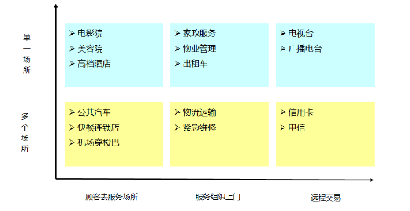
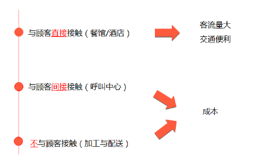

第二节 服务设计的流程
服务设计包括七个步骤，它们不是简单的次序关系，而是相互迭代互为依赖的关系。每一个步骤的改变，都应该考虑对其他环节的影响。
顾客的需求是多样的，它随时间、地点的变化而变化。因此，企业应该在认识自己能力的基础上，寻找与其能力适配的客户需求。此外，服务产品的隐性因素关系到客户满意度的提高，所以识别客户的隐性需求对服务业而言更为重要。

确定顾客群体的构成后的工作则是提供令顾客满意的服务产品。服务产品的设计，原则上主要涉及产品显性和隐性两部分。对于显性部分，应最终实现产品标准化。标准的制定不仅是质量的保障也是流程标准化的基础。而对于隐性部分，关注点应是顾客个性化需求的定制，正确识别顾客的精神需求，能有效提高服务中“有形”产品的附加值。同时，需要权衡服务的质量和价格之间的关系。针对具体的客户群体，权衡这两者的关系对于设计满足客户和组织需要的服务产品是至关重要的。
设施选址直接关系到服务企业的绩效。顾客参与消费的方式，决定了服务设施的选址。对于顾客参与程度高的服务业，如医疗和餐饮等行业，设施的选址必须以目标客户为中心。不同的选址目标也会带来不同的结果。

服务需求的波动性对服务的能力规划会产生显著影响，服务能力包括设施和人员能力。这种波动性的例子包括餐饮业中午、晚上的就餐高峰和平时“无人问津”的明显比照；电信业早晨八点到晚上十二点之间的通话高峰和其他时段的低谷的对比。如果按照高峰时的需求来确定服务能力显然会产生浪费；相反如果服务能力太弱，会造成严重的“排队”现象，造成顾客的流失。因此，服务能力和需求的有效配给十分重要。
服务传递是指从原材料到顾客需要的服务产品的一系列活动。实现服务传递一般有三种方法：生产线方法、顾客参与方法和分离方法。生产线方法类似于制造业的产品制造系统，它将制造业成熟的方法和技巧用于服务产品的开发，讲求规模化和标准化，此方法适用于用户参与程度低的企业。顾客参与方法主要针对那些顾客参与程度高的企业，它注重顾客个性化的服务需求，讲求服务员工处理的自主性和灵活性。分离法则整合前两种方法的优势，被广泛运用，它将服务产品分为“前台”和“后台”两个环节，“后台”活动用户不参与，因此采用生产线方法；“前台”与用户共同完成，因此采用顾客参与方法。此外，传递系统应注意平衡顾客的服务水平、服务员工的授权程度和支持设施能力三者之间的关系。
服务创新主要包括目标创新和过程创新。目标创新意味着服务组织必须能够识别并引导服务发展的方向，比如倡导绿色环保型的消费方式，不仅能够节约组织的资源消耗，同时满足了社会环境的可持续发展的要求。过程创新也包括两个层面的内容，一是改善具体服务操作细节的质量，二是采用更为先进的技术和方式提高过程的效率。
【口碑营销】袁景瑞：好口碑促进自发社交传播